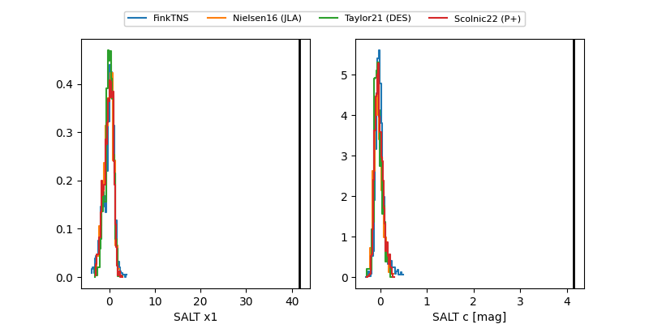

FINK: ZTF25abcdvmh
Lasair: ZTF25abcdvmh
ALeRCE: ZTF25abcdvmh
ZTF25abcdvmh (ztf,fink)
equatorial (ra, dec) = (286.8077,-21.46838)
galactic (l, b) = (15.2200,-12.93895)

last atlaso=17.55, ztfg=18.34
1 atlaso, 3 ztfg detections